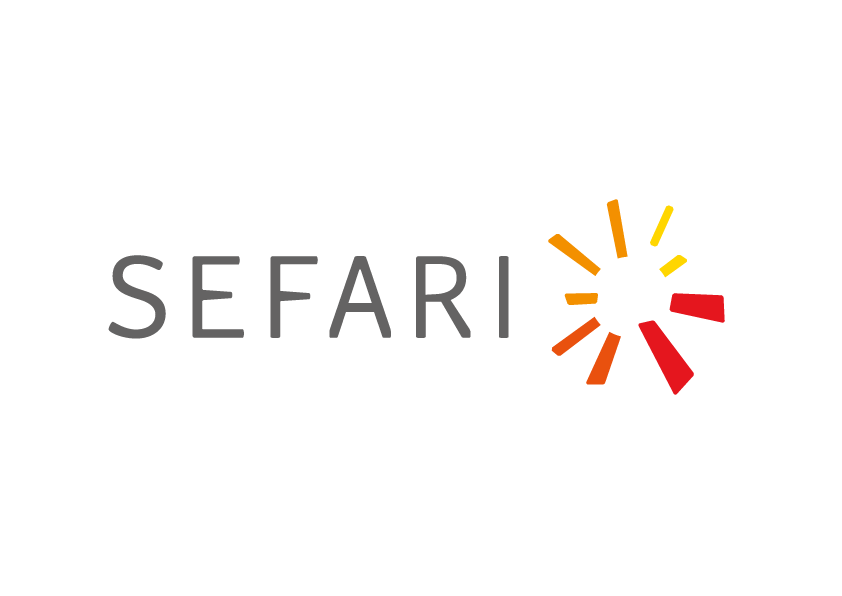
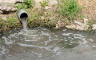

Bio4Ag Logo
Bio
diversity
4Ag
riculture: lessons from the Centre for Sustainable Cropping

Home
Toolbox
Resources
Datasets
Contact Us

Water Quality, leaching & Runoff
Management goal and justification/background
Measures/interventions applied at CSC
Indicators monitored
CSC Data Dashboard
Crop:
All
Wheat
Barley
Potato
Indicator:
Yield
Nutrition
Year:
All
2025
2024
2023
2022
Field:
All
Field 1
Field 2
[Placeholder for chart showing yield vs. year, etc.]
Relevant Projects & Publications
Crop Modelling Work
–
Project Link
Legume Projects
–
Project Link
Research Paper